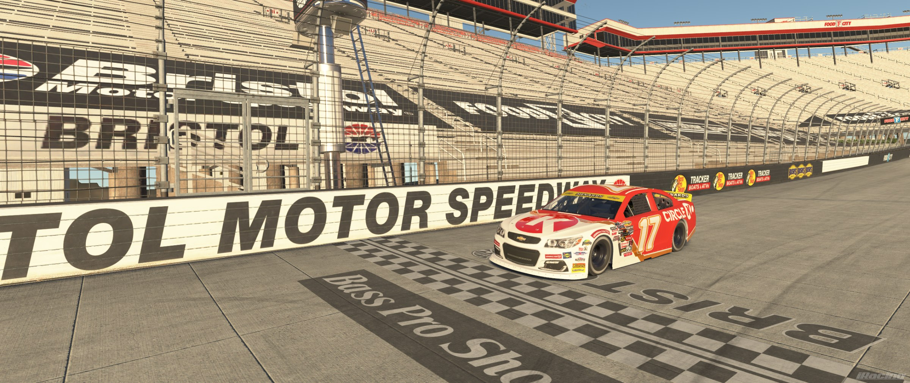
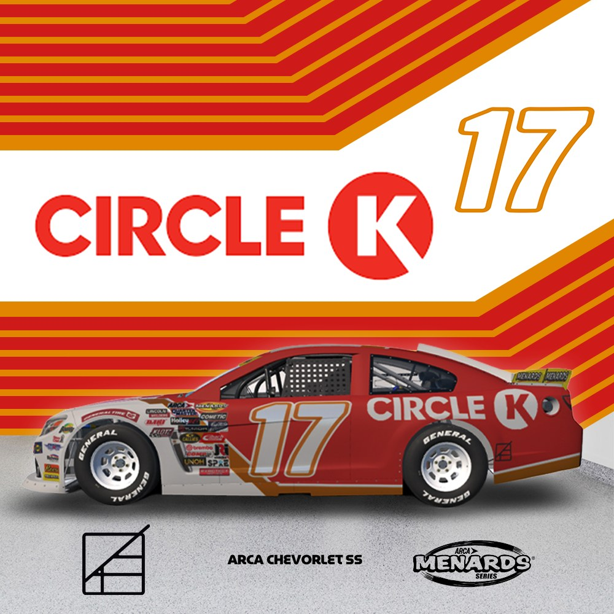
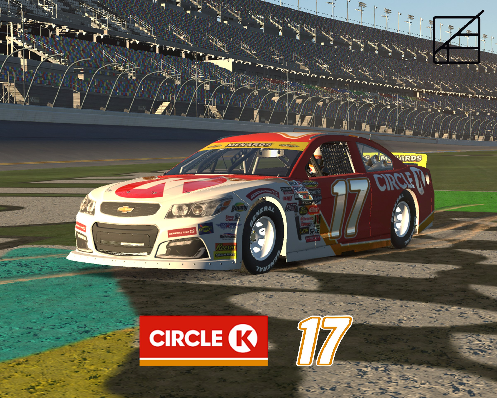
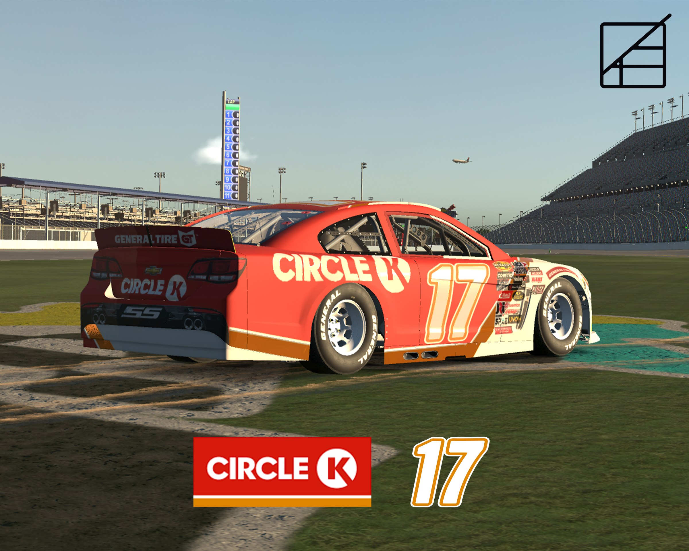

The design brings Circle K’s retail branding onto the car in a bold, high contrast layout.
The car uses Circle K’s red, cream, and circular K logo as the foundation. A diagonal split runs across the body with a metallic gold stripe separating the two colors. The Circle K wordmark stretches across the doors, while a large #17 on each side ties it back to the promotional artwork.


